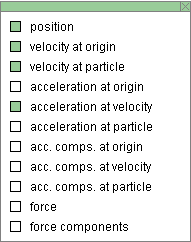
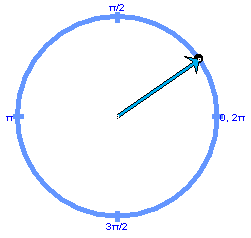
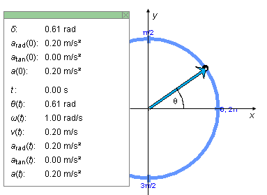
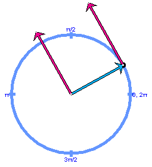
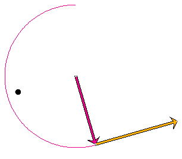
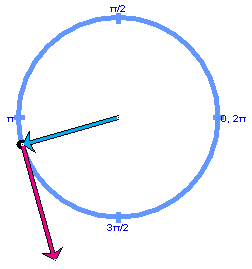
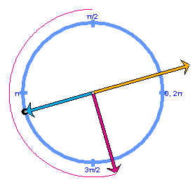
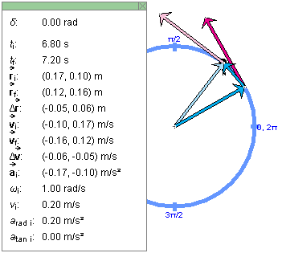
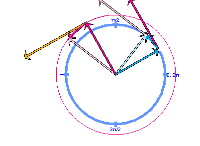
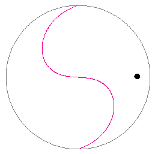

Instructions
This page is designed to get you started using the applet. The applet should be open. The step-by-step instructions on this page are to be done in the applet. You may need to toggle back and forth between instructions and applet if your screen space is limited.
 4. Net Force in Circular Motion
4. Net Force in Circular Motion
 1. Velocity As Time-Rate-Of-Change
Of Position
1. Velocity As Time-Rate-Of-Change
Of Position
 2. Acceleration As
Time-Rate-Of-Change Of Velocity
2. Acceleration As
Time-Rate-Of-Change Of Velocity

Exercise 1. RESET  the applet, and make sure it is set to the
Continuous Mode by selecting the appropriate radio button
.
the applet, and make sure it is set to the
Continuous Mode by selecting the appropriate radio button
.
The circular path of the mass point will be displayed in blue, with angular positions in rad marked at the quarter points. The mass point is shown as a black dot and is located at the point marked "0, 2p". Click on the mass point, and drag it along the circle to set the starting position of the motion.
Select the Vector Panel button  , and select "position" on
that panel. The Vector Panel is illustrated in Figure 1
below, with "position" and three other items selected. For
the time being, select only "position".
, and select "position" on
that panel. The Vector Panel is illustrated in Figure 1
below, with "position" and three other items selected. For
the time being, select only "position".

Figure 1
This will cause the position vector of the mass point to be drawn in cyan. The origin relative to which the position vector is taken is the center of the circle. Depending on where you choose the mass point's initial position, you should see something like the image in Figure 2 below.
Figure 2
Select the Data button  to display the Data box as shown in Figure 3
below. You may have to drag the box to where you want it
to be.
to display the Data box as shown in Figure 3
below. You may have to drag the box to where you want it
to be.

Figure 3
The value of the angle d by which the position vector is rotated at time t = 0 relative to the horizontal axis (x-axis) is the first item in the Data box.
In Figure 3 the x,y axes have been added for clarity. They are not illustrated in the applet. Neither is the angle q which is the angle between the position vector and the positive x-axis as illustrated in Figure 3. The value of q(t), which varies in time with the position vector, is shown in the lower portion of the Data box. Its initial value at time t = 0 is the angle d shown in the upper portion of the Data box. In the case illustrated in Figure 3, d = 0.61 rad.
Exercise 2. Continuing from Exercise 1, make the following settings:
Play  the motion.
Then Pause
the motion.
Then Pause  it.
it.
Display the Data box, and write down the values of d, w(0), t, and q(t). You should find that they satisfy the equation "q(t) = w(0)×t + d" because the motion has constant angular velocity. Check it.
Exercise 3. Continuing from Exercise 2, REWIND the applet.
Change the setting of one of the following sliders. Then PLAY the motion. REWIND, change the setting of another slider, and PLAY the motion again, etc.


Exercise 1. RESET the applet, and make sure the Continuous mode is
selected.
Using the Vectors button to display the Vector Panel, select "position" and "velocity at particle" to display the mass point's position vector (in cyan) and the mass point's velocity vector (in magenta) attached to the mass point. Then close the Vector Panel. Set the Zoom slider to setting 12, which will slightly increase the length of the arrow representing the velocity but will leave the position vector and the blue particle path unchanged.
Play the motion. Observe the direction of the velocity vector in relation to that of the position vector and in relation to the blue circular path.
Answer. For any motion of a mass point, the velocity vector always points in the direction of motion of the tip of the position vector. At a given instant, this direction is that of the tangent to the path of the mass point. For a circular path as in this applet, the tangential direction to the path, and therefore the direction of the velocity vector, is at all times at right angles to the position vector.
This is true even if the speed is not constant. To check this, Rewind the applet, set the dv/dt-slider to 0.10 m/s2, and Play the motion. You should be able to observe that while the arrow representing the velocity vector is getting longer it always remains perpendicular to the position vector and tangential to the mass point's circular path.
Exercise 2. Continuing from Exercise 1, click Rewind, set the dv/dt-slider back to 0, and in the Vector Panel check "velocity at origin" in addition to the other two vectors already checked in Exercise 1. This will display a second copy of the velocity vector, this one with its tail end at the origin. Hide the Vector Panel, and take the Zoom slider to setting 12.
Play the motion, and describe what you observe. Make a drawing showing the three vectors and the mass point's path at two different instants of time.
Answer. A typical snapshot is shown in Figure 4 below.

Figure 4
Exercise 3. Continuing from Exercise 2, hide the velocity vector that is attached to the mass point (by deselecting "velocity at particle" in the Vector Panel) so that only the position vector and the velocity vector that is attached to the origin remain displayed.
Click Rewind, and select the Velocity Trace button
 .
The trace of the tip of the velocity vector from the
previous motion will be displayed.
.
The trace of the tip of the velocity vector from the
previous motion will be displayed.
Play the motion again. The trace made by the tip of the velocity vector will be redrawn and extended as the motion continues. Make a drawing of the two vectors and their two traces in your Notebook.
Exercise 1 of the following section, "Acceleration", continues from here.
Exercise 1. Preparing the applet:
the
applet, display the velocity vector with tail end at the
origin, display the Velocity Trace, and set the Zoom slider
to 12. Make sure the applet is set to the Continuous mode.
Select "acceleration at velocity" in the Vector Panel to display the acceleration vector with its tail end attached to the tip of the velocity vector. Play the motion, and make drawings of the configuration at two different instants of time. Ignore the position path when making your drawing or hide it by deselecting the Trace-P button. The important thing to observe here is the relationship between the velocity and acceleration vectors.
Answer. Figure 5 below illustrates what you might see at some instant.

Figure 5
Exercise 2. Continuing from Exercise 1, hide the velocity-at-origin and acceleration-at-particle vectors and, instead, display the position and velocity-at-particle vectors. Hide the Velocity Trace and display the Position Trace (mass point's path). Make a drawing of the configuration of the position and velocity vectors, and compare it to the drawings in Exercise 1.
Answer. The position-velocity configuration at the instant of the velocity-acceleration configuration of Figure 5 is shown in Figure 6 below.

Figure 6
Observe that the relationship between acceleration and velocity shown in Figure 6 is analogous to that between velocity and position in Figure 5. The acceleration-velocity pair is rotated by 90o relative to the velocity-position pair.
Exercise 3. Continuing from Exercise 2, delete the velocity-at-particle vector and add the the velocity-at-origin and acceleration-at-origin vectors. Display both the Position Trace and the Velocity Trace. Make a drawing of the configuration. Then Play the motion and observe how the configuration of the three vectors changes during the motion.
Figure 7 below shows the configuration of position-velocity-acceleration vectors, all three attached to the origin, at the moment illustrated in Figures 5 and 6.

Figure 7
The velocity vector is 90o ahead of the position vector and the acceleration vector, in turn, is 90O ahead of the velocity vector. This configuration is maintained throughout the motion.
Exercise 1. RESET the applet, and make sure it is set to the
Continuous Mode by selecting the appropriate radio button
.
Display the net force acting on the mass point by selecting "force" in the Vector Panel. The arrow representing the force vector (in dark blue) will point from the mass point to the center of the mass point's circular orbit.
Play the motion, and observe the force vector during the motion. It should remain pointing towards the center of the circle.
Exercise 2. Continuing from Exercise 1, click Rewind, and vary the mass setting. The length of the blue arrow representing the net force should vary in proportion to the mass.
Exercise 3. Continuing from Exercise 2, click Rewind, and vary the Zoom setting. The length of the arrow representing the net force should vary with the square of the Zoom setting.
Exercise 4. Continuing from Exercise 3, click Rewind, and set the dv/dt-slider to 0.10 m/s2. The arrow representing the force vector should now have both a tangential component pointing forward and a radial component pointing towards the center of the circle.
Display the radial and tangential components (in light blue) of the net force by selecting "force components" in the Vector Panel.
Play the motion and observe how the force components change during the motion.
Answer. The tangential component of the net force should stay the same in magnitude. Its magnitude is equal to m|dv/dt|. The radial component should be increasing in magnitude with the square of the speed of the mass point. The magnitude of the radial component of the net force is equal to mv2/r.
Exercise 5. Display the "acceleration-at-particle" vector. It will be covered by the net force vector, but the arrow tip should be visible underneath the force vector. Play the motion. You should be able to observe that the acceleration and net force are pointing in the same direction and are proportional to each other.

Exercise 1. RESET the applet, and make sure it is set to the
Incremental Mode by selecting the appropriate radio button.
Set the Time Step slider to 0.40 s, and display the position and velocity-at-particle vectors. Also display the Data box and move it to one side. Step through the motion until the initial step time ti = 6.80 s. The time value is shown in the Data box. You should obtain a display like that shown in Figure 8 below.

Figure 8
Observe that the change in position D is intermediate in direction to the initial
velocity vector
is intermediate in direction to the initial
velocity vector  i and the final velocity vector
f for each time step. Check that the
x,y coordinates for the position and
velocity vectors given in the Data box look "reasonable".
The x,y axes are illustrated in Figure 3
above.
i and the final velocity vector
f for each time step. Check that the
x,y coordinates for the position and
velocity vectors given in the Data box look "reasonable".
The x,y axes are illustrated in Figure 3
above.
Exercise 2. Continuing from Exercise 1, click Rewind
and reduce the time step to 0.20 s. Again step through the
motion. This time, the position change D should be much closer in direction to the initial
and final velocity vectors at each step.
Repeat this for even smaller time steps.
Exercise 3. Calculate D/Dt, where
Dt = t2 -
t1, and compare the result to i for
different step sizes. Do the two values approach each other
as the step size is reduced?
Exercise 1. RESET the applet, and make sure it is set to the
Incremental Mode by selecting the appropriate radio button.
Repeat Exercise 1 from the preceding section, but add two more vectors. Thus, set the Time Step slider to 0.40 s, and display the former position and velocity-at-particle vectors, plus the additional velocity-at-origin and acceleration-at-velocity vectors. Also display the Data box, but move it out of the way so that you can just see the initial and final times for a time step. Step through the motion until ti = 6.80 s.
Make a drawing of the configuration at ti = 6.80 s. If you also display the Velocity Trace and have the Zoom slider set to 12, you should be able to observe the configuration shown in Figure 9 below.
Figure 9
Observe that the direction of the acceleration vector
 i
at the beginning of the time step is somewhat similar, but
not really close, to that of the change in velocity
D during the time step. Also check that the
x,y coordinates for the velocity and
acceleration vectors given in the Data box look "reasonable".
The x,y axes are illustrated in Figure 3 above.
i
at the beginning of the time step is somewhat similar, but
not really close, to that of the change in velocity
D during the time step. Also check that the
x,y coordinates for the velocity and
acceleration vectors given in the Data box look "reasonable".
The x,y axes are illustrated in Figure 3 above.
Exercise 2. Continuing from Exercise 1, click Rewind
and reduce the time step to 0.20 s. Again step through the
motion. This time, the velocity change
i at each step.
Repeat this for even smaller time steps.
Exercise 3. Calculate D/Dt, where
Dt = t2 -
t1, and compare the result to i for
different step sizes. Do the two values approach each other
as the step size is reduced?

This section will take you through a demonstration indicating that the laws of circular motion were known in China already many centuries ago.
Exercise 1. RESET the applet, and make sure it is set to the
Continuous Mode by selecting the appropriate radio button. Hide the Position Trace by deselecting the Trace-P button and select the Trace-V button instead to display the Velocity Trace. Set the Zoom slider to 12. At this point only the black dot representing the mass point should be displayed in the applet window.
Play the motion until the mass point has completed one revolution and a complete circular velocity trace is drawn. Then Pause the motion, and click Rewind.
Set the angular acceleration slider to the value a = -0.33 rad/s2, and Play the motion.
The mass point will start moving counter-clockwise, but its motion will be slowing down, come to a stop, reverse direction, and speed up again. When the mass point has reached its starting position, Pause the motion. The traces on the screen should form the pattern shown in Figure 10 below.

Figure 10
Exercise 2. Continuing from Exercise 1, click Rewind. Display the velocity-at-origin vector and Play the motion again.
Explain why the velocity trace has an S-shape, and predict how the shape will change when you repeat the motion with a different value of the angular acceleration a. Then test your prediction with the applet.